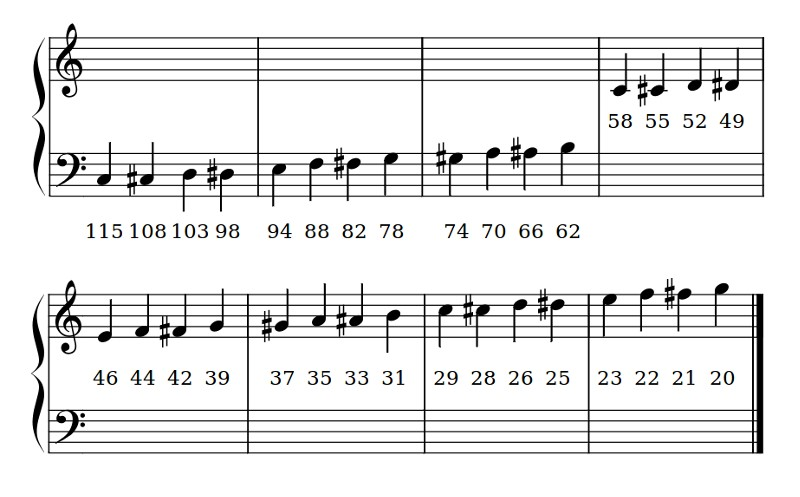

Micro:bit Sound#
MicroPython on the BBC micro:bit comes with a powerful music and sound module, which can drive the micro:bit 2 speaker.
Documentation
All the sound functions can be found across the BBC micro:bit MicroPython music documentation, BBC micro:bit MicroPython speech documentation, and BBC micro:bit MicroPython speech documentation.
Music#
Music
Full details can be found at the BBC micro:bit MicroPython Music documentation.
MicroPython on the BBC micro:bit comes with a powerful music and sound module. It’s very easy to generate bleeps and bloops from the device using the speaker.
Built-in tunes#
Notice that we import the music module. It contains methods used to make and control sound. For example:
1# built-in tunes example
2
3import music
4
5music.play(music.NYAN)
MicroPython has quite a lot of built-in melodies: here is the complete list.
Custom Tunes#
Creating your own tunes is easy!
Each note has a name (like C# or F), an octave (telling MicroPython how high or low the note should be played) and a duration (how long it lasts through time).
Octaves are indicated by a number ~ 0 is the lowest octave, 4 contains middle C and 8 is about as high as you’ll ever need unless you’re making music for dogs.
Durations are also expressed as numbers. The higher the value of the duration the longer it will last. Such values are related to each other - for instance, a duration of 4 will last twice as long as a duration 2 (and so on).
If you use the note name R then MicroPython will play a rest (i.e. silence) for the specified duration.
Each note is expressed as a string of characters like this:
NOTE[octave][:duration]
For example, "A1:4"`` refers to the note named Ain octave number1to be played for a duration of4`.
Make a list of notes to create a melody (it’s equivalent to creating an animation with a list of images). For example, here’s how to make MicroPython play opening of “Frere Jaques”:
1# custom music example
2
3import music
4
5tune = ["C4:4", "D4:4", "E4:4", "C4:4", "C4:4", "D4:4", "E4:4", "C4:4",
6 "E4:4", "F4:4", "G4:8", "E4:4", "F4:4", "G4:8"]
7music.play(tune)
Sound Effects#
MicroPython lets you make tones that are not musical notes. For example, here’s how to create a Police siren effect:
1# sound effects example
2
3import music
4
5while True:
6 for freq in range(880, 1760, 16):
7 music.pitch(freq, 6)
8 for freq in range(1760, 880, -16):
9 music.pitch(freq, 6)
Notice how the music.pitch method is used in this instance. It expects a frequency. For example, the frequency of 440 is the same as a concert A used to tune a symphony orchestra.
Speech#
Computers and robots that talk feel more “human”. Getting the micro:bit talk to you is one way to express information in a fun, efficient and useful way. To this end, the micro:bit has integrated a simple speech synthesiser based upon a reverse-engineered version of a synthesiser from the early 1980s. It sounds very cute, in an “all humans must die” sort of a way.
Speech
Full details can be found at the BBC micro:bit MicroPython Speech documentation.
Say#
The simplest way to get the device to speak is to import the speech module and use the say function like this:
1# speech example
2
3import speech
4
5speech.say("Hello, World")
While this is cute it’s certainly not DALEK enough for our taste, so we need to change some of the parameters that the speech synthesiser uses to produce the voice. Our speech synthesiser is quite powerful in this respect because we can change four parameters:
pitch- how high or low the voice sounds (0 = high, 255 = Barry White)speed- how quickly the device talks (0 = impossible, 255 = bedtime story)mouth- how tight-lipped or overtly enunciating the voice sounds (0 = ventriloquist’s dummy, 255 = Foghorn Leghorn)throat- how relaxed or tense is the tone of voice (0 = falling apart, 255 = totally chilled)
Collectively, these parameters control the quality of sound - a.k.a. the timbre. To be honest, the best way to get the tone of voice you want is to experiment, use your judgement and adjust.
To adjust the settings you pass them in as arguments to the say function. More details can be found in the speech module’s API documentation.
After some experimentation we’ve worked out this sounds quite DALEK-esque:
1# speech detailed example
2
3import speech
4
5speech.say("I am a DALEK - EXTERMINATE", speed=120, pitch=100, throat=100, mouth=200)
Pronounce#
You’ll notice that sometimes, the say function doesn’t accurately translate from English words into the correct sound. To have fine grained control of the output, use phonemes: the building-block sounds of language.
The advantage of using phonemes is that you don’t have to know how to spell! Rather, you only have to know how to say the word in order to spell it phonetically.
A full list of the phonemes the speech synthesiser understands can be found in the API documentation for speech. Alternatively, save yourself a lot of time by passing in English words to the translate function. It’ll return a first approximation of the phonemes it would use to generate the audio. This result can be hand-edited to improve the accuracy, inflection and emphasis (so it sounds more natural).
The pronounce function is used for phoneme output like this:
1# pronounce example
2
3import speech
4
5speech.pronounce("/HEH5EH4EH3EH2EH2EH3EH4EH5EHLP.")
By changing the pitch setting and calling the sing function it’s possible to make the device sing (although it’s not going to win Eurovision any time soon).
The mapping from pitch numbers to musical notes is shown below:
Sing#
By changing the pitch setting and calling the sing function it’s possible to make the device sing (although it’s not going to win Eurovision any time soon).
The mapping from pitch numbers to musical notes is shown below:

Annotations work by pre-pending a hash (#) sign and the pitch number in front of the phoneme. The pitch will remain the same until a new annotation is given. For example, make MicroPython sing a scale like this:
1# sing example
2
3import speech
4
5solfa = [
6 "#115DOWWWWWW", # Doh
7 "#103REYYYYYY", # Re
8 "#94MIYYYYYY", # Mi
9 "#88FAOAOAOAOR", # Fa
10 "#78SOHWWWWW", # Soh
11 "#70LAOAOAOAOR", # La
12 "#62TIYYYYYY", # Ti
13 "#58DOWWWWWW", # Doh
14]
15song = ''.join(solfa)
16speech.sing(song, speed=100)
In order to sing a note for a certain duration extend the note by repeating vowel or voiced consonant phonemes (as demonstrated in the example above). Beware diphthongs - to extend them you need to break them into their component parts. For example, “OY” can be extended with “OHOHIYIYIY”.
Experimentation, listening carefully and adjusting is the only sure way to work out how many times to repeat a phoneme so the note lasts for the desired duration.
Microphone#
The built-in microphone available on the micro:bit V2 can be used to respond to sound.
Microphone
All the Microphone functions can be found in the BBC micro:bit MicroPython Microphone documentation.
The microphone input is located on the front of the board alongside a microphone activity LED, which is lit when the microphone is in use.

Sound Events#
The microphone can respond to a pre-defined set of sound events that are based on the amplitude and wavelength of the sound.
microbit.SoundEvent.QUIET→ transition of sound events from loud to quiet like speaking or background music.microbit.SoundEvent.LOUD→ transition of sound events, from quiet to loud like clapping or shouting.
For example:
1# microphone sound event example
2
3from microbit import *
4
5while True:
6 if microphone.current_event() == SoundEvent.LOUD:
7 display.show(Image.HEART)
8 sleep(200)
9 if microphone.current_event() == SoundEvent.QUIET:
10 display.show(Image.HEART_SMALL)
Sound level#
The microphone can also provide a reading of the sound pressure in the range of 0 - 255.
For example:
1# microphone example 2
2
3from microbit import *
4
5while True:
6 sound_level = microphone.sound_level()
7 display.scroll(sound_level)
8 sleep(500)
Sound exercises#
Create a program that plays an original tune
Create a program that sings the College Song
Create a program that turns lights up the display according to loudness of the sound in the microphone